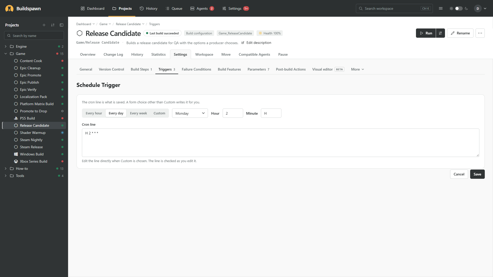

Schedule trigger
Starts a build at set times, such as a nightly build of every platform.
In the trigger picker this is called Build periodically.
When to use it
Use it for work that does not depend on a change: a nightly full build, a weekly cook, a morning smoke test.
How to set it up
- Open the build configuration and go to Settings › Triggers.
- Click Add new trigger and click Add next to Schedule Trigger.
- Choose a Frequency: Every hour, Every day, Every week or Custom.
- Fill in the Hour, Minute and (weekly) the Day.
- Check the Cron line. It is the line that is saved, and it is checked as you type.
- Click Save.

Every field
| Field | What it does | Default | Example |
|---|---|---|---|
| Frequency | Every hour, Every day, Every week, or Custom. A choice other than Custom writes the cron line for you. | Every day | Every week |
| Day | Weekly only. Sunday to Saturday. | Monday | Monday |
| Hour | A whole number 0 to 23, or H. Empty means H. | H (2 for a new daily schedule) | 2 |
| Minute | A whole number 0 to 59, or H. Empty means H. | H | 0 |
| Cron line | The schedule. Edit it directly when Custom is chosen. | H 2 * * * for a new trigger | 0 2 * * 1-5 |
Cron syntax
A cron line has five fields, separated by spaces: minute (0-59), hour (0-23), day of month (1-31), month (1-12) and day of week (0-7; 0 and 7 are Sunday).
| Part | Means | Example |
|---|---|---|
* | Every value. | * * * * * every minute |
a,b | A list. | H H 1,15 * * |
a-b | A range. | 0 9 * * 1-5 weekdays at 09:00 |
*/n or a-b/n | Every n steps. | */10 * * * * |
H | A fixed value picked from a hash of the build configuration name, so not every build starts at the same second. It can have a range: H(0-7). | H H(0-7) * * * some time between midnight and 07:59 |
@hourly, @daily, @midnight, @weekly, @monthly, @yearly | Short names that use H. @midnight means some time from 00:00 to 02:59. | @daily |
TZ=Zone | First line only. Uses another time zone instead of the server's. The IDs are the Java time zone IDs. | TZ=Europe/London |
Empty lines and lines that start with # are comments. You can write several lines.
# Every weekday at 02:00
0 2 * * 1-5
# Every 4 hours
H */4 * * *
# London time, once in the morning
TZ=Europe/London
H 8 * * **/3 and H/3 in the day of month field do not repeat evenly near the end of a month, because months have different lengths. Use days of the week instead.
A worked example
The Skyforge nightly builds every platform at 02:00 on weekdays. Choose Custom and type 0 2 * * 1-5. See Run nightly at 02:00.
What you see when it runs
The row on the Triggers page reads Daily at 02:00, Every Monday at 03:30 or On a cron schedule. The build's cause says it was started by the timer. %build.triggeredBy.username% is empty.
Problems and fixes
| Problem | What to do |
|---|---|
| A minute or hour is refused | A minute is a whole number from 0 to 59, or H. An hour is 0 to 23, or H. |
| Pick a day of the week | Choose a day for a weekly schedule. |
| A schedule is needed | The cron line is empty. |
| The build starts at the wrong time | The server's time zone is used. Add TZ=... as the first line. |
| The build starts at a minute I did not choose | H picks a minute for you. Type a number to fix it. |